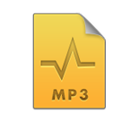
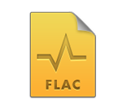

An Overview of Audio Formats
Fission works with six of the most popular audio formats: MP3, AAC, Apple Lossless, FLAC, AIFF, and WAV.
Selecting an Audio Format
First, if you're unsure what audio format to save to, MP3 is likely a very safe bet. It will provide a very small audio file which can be played almost anywhere.
If you don't want to lose any quality but still wish to save disk space or bandwidth when transferring the file, Apple Lossless is a good choice. If you want a lossless file which will play anywhere, AIFF or WAV are good choices.
Finally, if you can avoid switching audio formats entirely (by simply saving, instead of exporting), you'll prevent quality loss from occurring. That said, transcoding between formats is certainly fine when a specific file format is required, and quality loss caused by transcoding is generally not problematic.
For more information on each specific audio format, read below.
MP3
MP3 is the most popular format for audio compression, making it the most universal file type; MP3 files can be played almost anywhere. MP3 files are compressed lossily, meaning some audio quality may be lost when they're created. However, the files are also very compact, using only a small amount of disk space.
AAC
Though not as universal as MP3, AAC is another well-known format for audio compression, popularized by Apple. As such, AAC files play well on the Mac and iOS devices, but may not be as easy to play elsewhere. Like MP3, AAC files are compressed lossily, meaning some audio quality may be lost when they're created. AAC files are generally even more compact than MP3, using less disk space for the same level of quality.
Apple Lossless
As you might expect, the Apple Lossless format was created by Apple. It's a lossless compression format, which means that even though the files are shrunk down in size, no audio quality is lost. Though they are compressed to around half the size of uncompressed AIFF/WAV files, these files will still be quite large. They'll play on all iOS devices and in iTunes, as well as in many applications on the Mac.
FLAC
FLAC is an open competitor to Apple Lossless. Like Apple Lossless, it offers lossless compression, creating large files of around half the size of uncompressed AIFF/WAV files but losing no quality. FLAC is a popular format for web distribution of lossless audio. Unfortunately, FLAC files currently require special plugins or players on the Mac, and do not play on iOS devices. Fission makes it easy to convert files out of the FLAC format, if you desire.
AIFF/WAV
 AIFF and WAV are twin uncompressed audio formats, which generally work identically. While AIFF was once used largely on the Mac platform and WAV used largely on Windows, they're now each compatible on both platforms. These files have no compression, so they're enormously large, but as with Apple Lossless and FLAC, no quality is lost. AIFF and WAV files will play in almost any audio player.
AIFF and WAV are twin uncompressed audio formats, which generally work identically. While AIFF was once used largely on the Mac platform and WAV used largely on Windows, they're now each compatible on both platforms. These files have no compression, so they're enormously large, but as with Apple Lossless and FLAC, no quality is lost. AIFF and WAV files will play in almost any audio player.